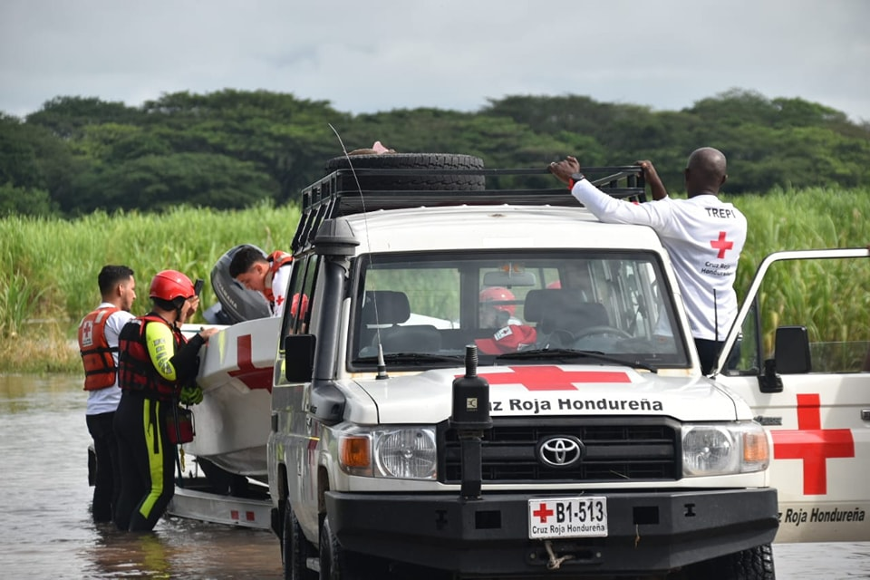
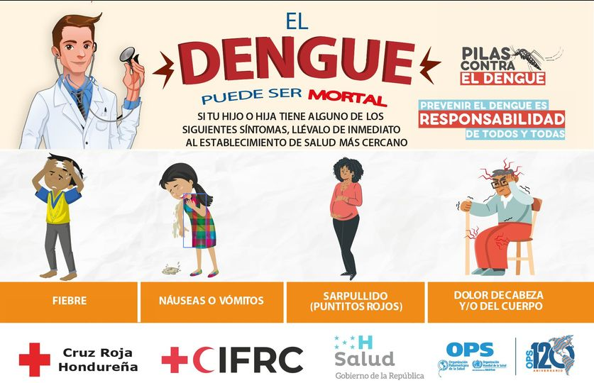

Gestión Integral para la Reducción del Riesgo
CRH fortalece la resiliencia de las personas y comunidades vulnerables y se enfoca en la capacidad de recuperación en los niveles individual, familiar, comunitario, municipal y nacional. La Gestión Integral para la Reducción del Riesgo comprende la adaptación y mitigación a la variabilidad climática y al cambio climático, procesos de fortalecimiento de preparación para la respuesta, recuperación y de la resiliencia comunitaria ante los desastres, crisis o emergencias, enfoques que son esenciales para el desarrollo sostenible de las comunidades.
Desarrollo Organizacional de la Sociedad Nacional

La CRH impulsará sus procesos de cambio y transformación, enfocándose en el fortalecimiento de las áreas identificadas, potenciando las fortalezas y aprovechando las oportunidades con miras a un desarrollo integral e integrado de los Consejos y Regiones. La visión del desarrollo de la Sociedad Nacional es responsabilidad principal de sus autoridades voluntarias y recae en los funcionarios directivos, juntos logran que la organización se oriente con mayor eficacia hacia el cumplimiento de su mandato y de ese modo sea más sostenible.
Salud Comunitaria
Se considera el acceso a la salud universal, parte del desarrollo social y económico y, por lo tanto, un elemento clave de las comunidades. Con el fin de contribuir a la reducción de las necesidades insatisfechas, promueve la atención y el acceso a la salud integral y el empoderamiento comunitario, concentrando el programa de salud en la prevención. Fortalece el Sistema Nacional de Sangre Integral, con mecanismos efectivos para garantizar la autosuficiencia, calidad, seguridad, eficiencia, disponibilidad, uso adecuado y acceso universal a la sangre y componentes sanguíneos a la población.
Desarrollo Social

CRH promueve el respeto de las personas para alcanzar una vida digna, sin importar su sexo, edad, género, condición social, creencia religiosa, política o cualquier otra condición que pueda generar estigma, discriminación y/o exclusión. Así mismo, promueve y aplica el enfoque de Acción Sin Daño en todo momento. Está a favor de la protección e inclusión social con especial énfasis en mujeres, niñez, personas con discapacidad, tercera edad, grupos étnicos, desplazados internos, migrantes en tránsito, retornados, refugiados, población LGTBQI+ y otras poblaciones vulnerables acorde a situaciones de riesgo.